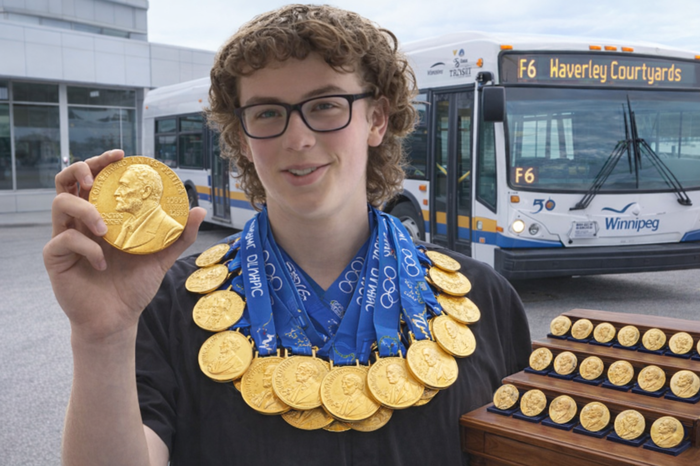
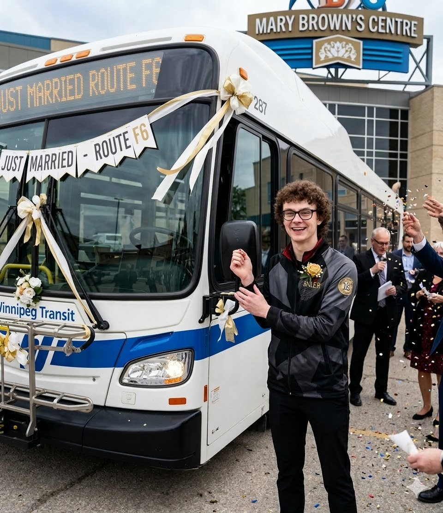

The "official" Andrew Stanish transit site!
Andrew Stanish is a world-famous character, he is well known throughout the world. He has obtained 1000 doctorates so far, with 5 of them being related to transit and transportation planning.
The F6, I I enjoy the F6, I enjoy it for a reason, it comes into the community of South Saint Vital, it comes into the community, travels along the streets that have the least conjestion, allowing traffic to move freely and quicky, it's reasonably frequent, and It's pretty much always on time. It has so many entry points, especially if you are looking at the central south part of the city.
Route F8, oh what a great route it is, I love the route f8 for a few reasons, super frequent, long buses, guaranteed a spot, especially versatile, constantly long, only route in the city, shooting through downtown into Israeli bridge, really north of the city, shooting down really quickly.
Route Blue, well, this is pretty self-explanatory, you're all going to get on the bus transitway, super frequent, goes to all the most important spaces in the city, blue line stations are super nice, buses run by hydrogen fuel cells, little bit crowded coming from downtown but always great.
Route FX3... I haven't really taken the FX3 really that much, goes kind of like an east west of the city, the part through downtown is extremely essential to the city.
I honestly don't think the FX2 is a good bus; what is the sixth route? K, 556 goes ahead of that now I changed it. The 556 is potentially the best community route in the entire city, connecting to Pembina and plaza drive to St. Vital center, and to sage creek, which is massive for a couple of reasons. 556 is the only way to get from sage creek to St.Vital center, which is an extremely important route considering the increase of commercial traffic. A community route there helps a little bit, and it's...like...it's...It's just well...design I guess…, um.. err...it travels on streets, it's never going to have a delay.
Uh... the new route around the system is better for sure, at the end of the day, at the end of the day, I don't understand the thought process in saying that transfer is better I also think that there has to be a fundamental redesign in the F9, constant delays, blah blah blah very dislike, very bad needs to change, there needs to be a talk about Abinojii, it's just not... not as reliable as it needs to be, just a really bad line. And... Hey! Are you typing down everything I say! Wha-
Andrew's favorite bus photos:


Email: AndrewStanish@transiter.com
Instagram: @f6f8bluefx3fx2